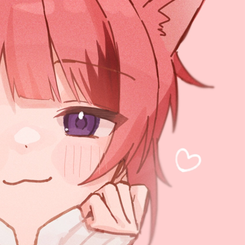
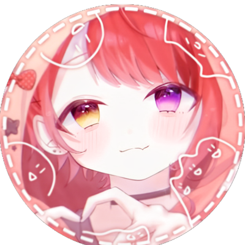
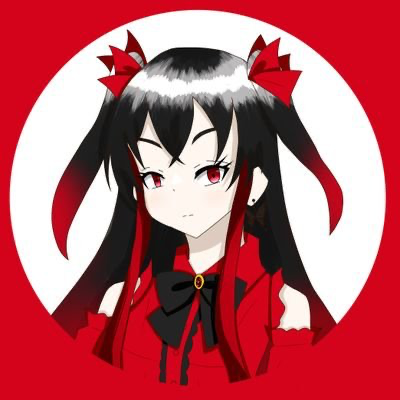
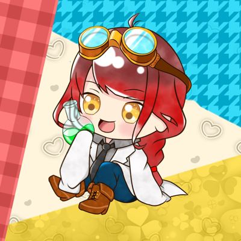
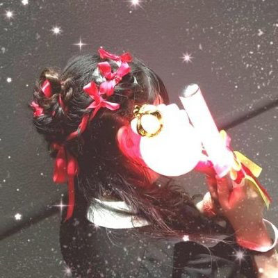
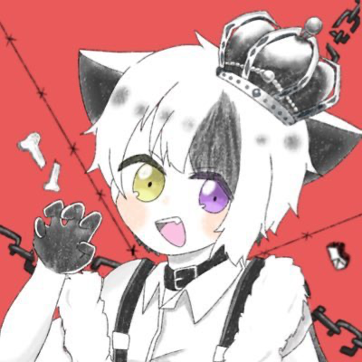

-Message-
愛しい君へ

@sakichaaaa_1122
さき
莉犬くんと過ごす何度目かのこの日,今年もまた迎えることができて嬉しいです
可愛くてかっこよくて、真っ直ぐで、いつでも笑顔をくれるあなたが大好きです
いつかの終わりの日のその先の未来もキラキラ輝くものでありますように！
莉犬くんの幸せをいつまでも願ってます💫

@koma_110
こまちお
26歳のお誕生日おめでとうございます！！！
また今年もお祝いできてとても嬉しいです。
どんな時も前を向いて突き進んでいく莉犬くんが大好きです。
いつでも私たちリスナーもことを考えて楽しませてくれる莉犬くんが大好きです。
莉犬くんの歌・声でたくさんの元気をもらっています。
辛い時でも誰よりも頑張る貴方をこれからも応援させてください。
生まれてきてくれてありがとう！
これからも一緒に未来の話をしましょう！
ずっとずっと大好きです。
このメッセージが少しでも莉犬くんの励みになりますように。
莉犬くんにとって幸せと笑顔で溢れる素敵な1年にしてください。

@Luo_Tukishiro
月代ルオ
お誕生日おめでとうございます。あなたが一生輝けますように
@MAAYA__dayo
MAAYA
26歳のお誕生日おめでとう！
君を好きになれて、莉犬くんを好きになれて幸せだよ。
たくさんの愛をありがとう。君の方が好きだけど私の方が愛してる。
『一緒に』幸せになろうね！約束

@rnAm3s1ba6i
Rui（るい）
莉犬くんへ
誕生日、おめでとうございます！
また今年も一緒にお祝いすることができ、凄く嬉しいです。
生まれてきてくれてありがとうございます。
莉犬くんの歌声や配信・アニメ・私たちリスナーに寄り添ってくれるところ・努力家なところ…全部大好きです！
2022年に莉犬くん・すとぷりの皆さん・リスナーの皆さんに出会うことができ、最高に幸せです！
人間関係・ネットのいじめで押しつぶされそうな時、莉犬くんの復讐・いじめに対するメッセージと『辛い時は泣いても良い、本当に疲れちゃった時は逃げても良い、休んでも良い。』
この言葉・メッセージを聞いて、凄く心が救われました。辛くなった時や悲しくなった時にこのメッセージを思い出して、元気をもらっています。居場所を作ってくれて、ありがとうございます。
いつも私たちに楽しい・幸せを届けてくださり、本当にありがとうございます。
ありがとうって感謝の気持ちを伝え続けていきます！これからも陰ながら応援していきます。
莉犬くんにとって良い1年になりますように🫶 Rui

@i_st_love
いおりん
お誕生日おめでとうございます。
今年も莉犬くんのお誕生日という特別な日をお祝いできて嬉しいです！
莉犬くんのお誕生日の度に伝えていますが今年も伝えさせてください。
生まれてきてくれてありがとうございます。
莉犬くんが生まれてきてくれて、
そしてこの活動を選んでくれたおかげでこうして
莉犬くんという素敵な人に出会えました。
莉犬くんに出会ってから沢山の幸せを貰っています。
優しい言葉に、声に沢山救われました。
出会ってくれて、出会わせてくれて本当にありがとうございます♡
莉犬くんが頑張りたい時、背中を押してほしい時は後ろから背中を押して応援します。
隣にいて欲しい時は隣に寄り添って一緒に歩いていきます。
不安な時は前を歩いて手を差し伸べます！
これからもそばにいさせてくださいね(◍ ´꒳` ◍)
わたしにとって莉犬くんはオンリーワンで
ナンバーワンの王子様です！！
今までも、これからも大好きです♡

@Pooon_123456
Pon
莉犬くんお誕生日おめでとうございます🎂⟡.·
莉犬くんと出会って好きになってからの毎日は物凄く幸せで笑顔で溢れています
どんな時も前を向いて走り続ける貴方をこれからもずっと傍で応援していきます
なんでもない毎日を照らしてくれて、道標になってくれてありがとう☺️
大切な毎日をタイムカプセルに込めて未来でまたお話しましょうね
これから先の未来でも莉犬くんが笑顔で活動を続けてくれますように🍀*゜
大好きです